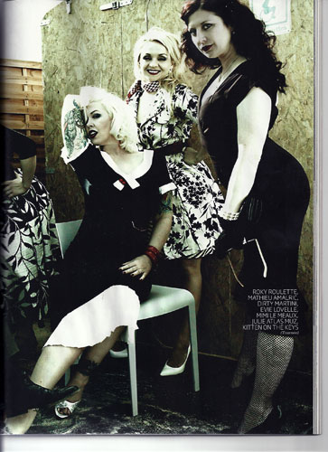

Suzanne Ramsey
Actress/Musician
Suzanne Ramsey AKA Kitten on the Keys can be seen in a variety of film projects
including:
TOURNEE Matheiu Amalric (France)
Devious Inc. Scary Cow Productions SF
Web of Vice -George Kuchar SF
Terror of Tittytown -Val Killmore SF
SHAKE -French Cowboy Music Video Nantes France
Syrens of the 23rd Century Jennifer M Kroot SF
The Chase -Barry Crosstops
Film Soundtracks:
Music w/ Vinsantos Alll About Evil-Peaches Christ Little Debbie's Theme
Tournee Soundtrack Jade Productions
Devious Inc Savage Song by Frank Novicki
Headshots by Hiroshi Wada